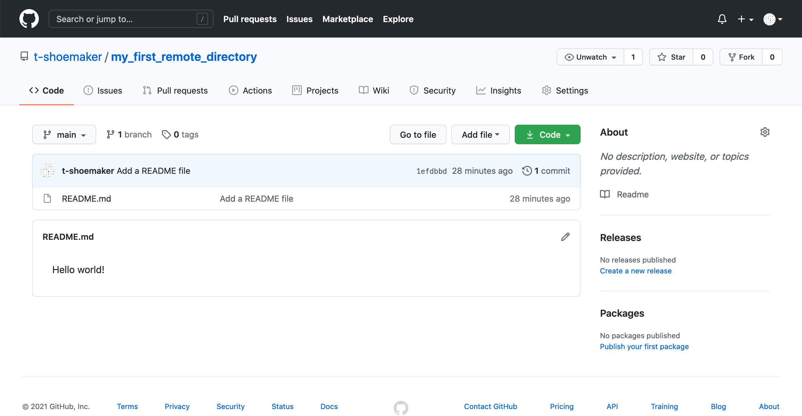
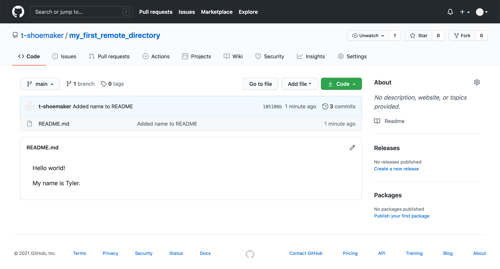
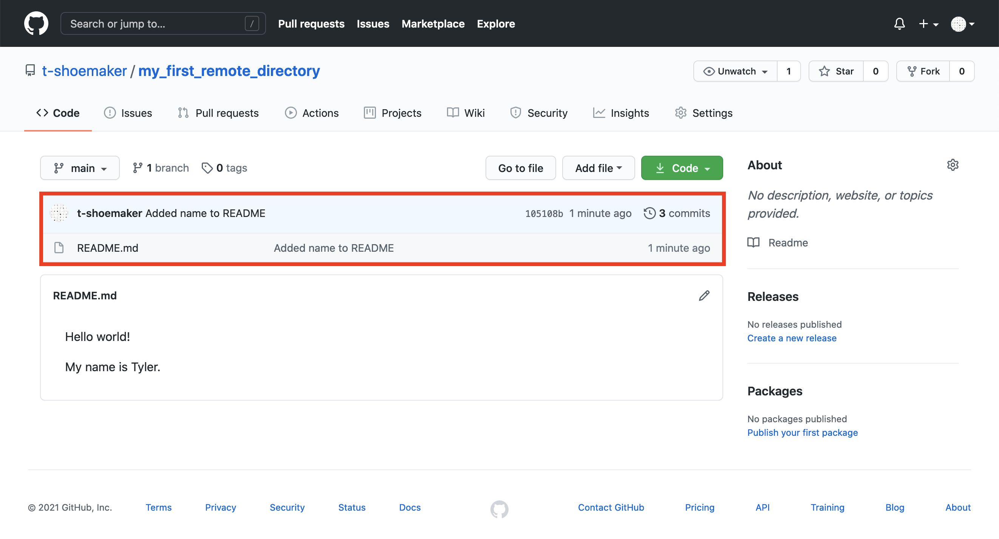
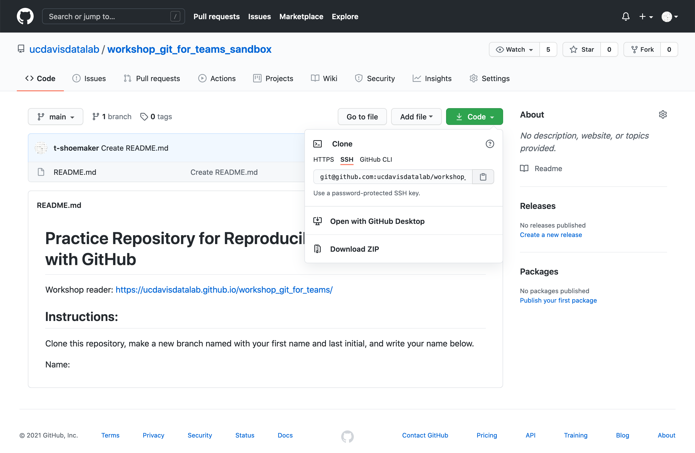

5 Working with Remote Repositories
One of the advantages of working with a version control system like Git is the ability to maintain and sync repositories across multiple computers and users. While there a variety of available, internet accesible remote repository hosting options, in this course, we will work with the Github platform.
5.1 GitHub Basics
At its simplest, GitHub is a hosting service for Git repositories. Much like Dropbox or Google Drive, it gives you a space to remotely store your code and related files. This can be useful when working on projects that require, for example, some kind of server, whether for the purposes of running large, potentially time-consuming data analyses or for serving up public-facing content (like a website). For such projects, GitHub acts as a reference point with which you can add, or push, changes on one computer and bring them down, or pull them, onto another. The process would look something like the following, where pushing and pulling from a remote branch entails keeping a reference point for a project that you’re developing locally:

With this diagram in mind, it’s not much of a conceptual leap to imagine how two or more people could work from the same remote repository. Each would pull that repository onto their respective local computers, make a branch, implement their changes, and push those changes back to the remote source. That way, multiple parts of a project could be under development simultaneously, and any such changes made to that project would be trackable according to the logic of version control.
Simultaneously pushing and pulling on multiple computers would look something like the following:

5.1.1 Communicating Through GitHub
What makes GitHub special is the fact that, more than being simply a place to store files, the service is above all a communication channel. Where GitHub extends the functionality of version control is not just where it offers various forms of cloud hosting; it is also where GitHub provides tools that let people talk about the code they’re working on. It’s a place where team members can propose and explain the changes they make, look at changes others have made, track and discuss any bugs that might come up, get feedback from others, and plan for any future changes the team intends to make.
Learning how to use GitHub, then, is as much about learning how to communicate effectively through the different facets of the service as it is about acquainting yourself with new technical skills (i.e., using your computer to track code remotely).
A short summary of the different facets of communication GitHub provides includes:
- Documentation, often through README files
- Issue tracking for bug reporting and assigning tasks
- Pull requests for proposing and discussing changes
- Wikis, which may feature additional documentation, tutorials, etc.
- Project boards for long-term planning
- Various graph visualizations for project overview
Additionally, GitHub users can monitor and modify other projects’ code using “Watch,” “Star,” and “Fork” functionalities. The service also provides teams with the ability to specify licensing information for their projects.
5.1.2 What Should I Push to GitHub?
A quick word about what should and shouldn’t be pushed to a remote repository, especially with an eye toward what we’ve said about communication. You can, of course, host large data files on GitHub, but there are a few caveats. For one, the site does have a storage limit, and it can also become quite inefficient to have team members constantly push/pull large files to/from GitHub. Further, hosting data files might not be particularly relevant to what a team might need to discuss. Data may change often over the course of a project, but tracking individual observations might not be necessary—more meaningful would be a conversation about how code has made, or might make, such changes. The latter is likely to be something that GitHub is better suited to facilitate.
It’s best, then, to host your data files separately from GitHub, either by way of a remote database or some kind of cloud service like Google Drive. Exceptions may come up, however, so the decision about what to track should ultimately be one made by the team.
Examples of what should be tracked with GitHub:
- Code
- Documentation
- Make files
- Some supporting media (small images, for example)
Finally, note that even though you can set a repository to either “Public” or “Private” (which controls who can see your project), it’s recommended that you refrain from uploading various access credentials (API keys, database passwords, etc.) to GitHub.
5.2 Basic GitHub Account Setup
To use GitHub, you need to make a (free) account. You can do so by going to github.com. Once you’re there, click “Sign Up” in the top-right corner of the page. This should take you to a form, which asks you to enter a username, email address, and password. After you’ve entered in this information (and completed a quick CAPTCHA), GitHub will make you an account. Then, the site will prompt you to complete an optional survey. Fill it out, or scroll to the bottom to skip it.
Either way, you’ll need to then verify your email address. Go to your inbox and look for an email from GitHub. Click the “Verify email address” button. Doing so will take you to your homepage, where, if you’d like, you can add a few details about yourself.

You now have a GitHub account!
5.2.1 Locally Setting Up Your Git Credentials
Regardless of how you make your commits, you will need to use the command line to provide Git with some information about who will be making commits. You may have already done this, however (and sometimes your computer does it automatically). To check, enter the following two commands in either Terminal (Mac) or Git Bash (Windows):
git config --global user.name
git config --global user.emailIf you see your name (or some kind of username) and your email after entering the above commands, you’re set. If nothing happens when you type them, you’ll need to provide this information with the following:
git config --global user.name "<your name>"
git config --global user.email "<your email>"You can check whether this was successful by simply calling either, or both, of the first two commands. They should echo back the information you’ve just entered.
5.2.2 SSH Keys and GitHub
When you work with remote repositories on GitHub, you’ll often need to enter your username/password to identify yourself. This is for two reasons: 1) it allows GitHub to track who has made changes to what files; 2) it adds a layer of security to projects, letting teams control who can make changes to their files. Repositories can be either public or private, and this layer of security helps teams control who has access to files in the first place.
It can be a pain, though, to have to enter and re-enter your credentials when making changes. More, passwords can be lost or worse, stolen. To avoid these problems, we can set up an SSH key. SSH keys (short for “Secure Shell”) are special, machine-readable credentials that allow users to safely connect and authenticate with remote servers over unsecure networks.
An SSH key has two parts:
- A public key, which encrypts messages intended for a particular recipient. This can be stored on remote servers, or even shared with others, to facilitate secure data transfers
- A private key, which deciphers messages encrypted by the public key. Your private key is the only thing capable of unlocking what is sent with your public key. It stays on your computer and should never be shared with anyone
Beyond what security measures an SSH key brings, it also acts as your digital signature. GitHub uses this internally to verify that you are, in fact, who you say you are when you commit code to a repository.
5.2.3 Connecting to GitHub with SSH
GitHub offers thorough, straightforward documentation for setting up an SSH key with its services, which we won’t repeat here. Instead, please visit the link below and follow the step-by-step instructions there to get yourself set up with a key.
The following steps at the link above are required:
- Checking for existing SSH keys
- Generating a new SSH key and adding it to the ssh-agent
- Adding a new SSH key to your GitHub account
- Testing your SSH connection
Once you have completed these steps, be sure you can successfully run the following command:
ssh -T git@github.comIf your connection is successful, you will see this message (a warning may first appear—see the documentation on GitHub for more information):
Hi <your username>! You've successfully authenticated, but GitHub does not
provide shell access.5.3 GitHub Desktop, or the Command Line?
Remember that Git is separate from GitHub. The latter is a service that’s been built around the former. One part of the services that GitHub offers is an application called GitHub Desktop, which allows users to manage their local repositories with a point-and-click graphical user interface (or GUI). Ultimately, it’s a matter of preference whether you use the GUI or stick with the command line for your own projects, but it is generally a good idea to become proficent at interacting with GitHub via the command line. One of the primary reasons for this has to do with the fact that not every computer you use will have GitHub’s GUI installed—or even have a screen! Many remote servers offer command line-only access, and if you ever want to sync your files with these machines, you’ll need to do so without GitHub Desktop. Luckily, GitHub seamlessly extends Git commands, so using the service without the GUI is, as we’ll see, quite straightforward.
5.4 Sync with GitHub
Now that you’re all set up with GitHub, it’s time to sync the website with a local repository on your computer. We’ll start by creating a test repository on your local Git intance.
First, use the command line to make a new directory in your Home folder:
mkdir ~/my_first_remote_directoryPut this directory under version control with Git:
cd ~/my_first_remote_directory
git initWith Vim, make a README markdown file:
vim README.mdWrite and save “Hello world!” in the file. You should see something like the following:

Exit Vim. Then, add README.md to Git and commit your changes. Don’t forget to write a short note in the commit message.
git add README.md
git commit -m 'Add a README file'You should see the following:

5.4.1 Preparing to Sync Your Repository
So far so good! All we’ve done is repeat the normal workflow for putting files under version control. But now we need to step away from the command line for a moment and prepare a space for receiving this repository on GitHub.
To do so, go to github.com and, on your homepage, click the “Create repository” button. You’ll be taken to this page:

There are a few things of note here:
- Repository name: your repository’s name, which should be the same as what’s on your computer
- Description: a short (1-2 sentence) explanation of what’s in this repository
- Public/private setting: repositories may be either “public” (viewable by anyone) or “private” (only viewable by you and those to whom you grant access)
- Initialize with details, including:
- A README file: a form of documentation; provides information about the files in the repository
- A .gitignore file: instructs Git to ignore specific files or filetypes
- A license: governs the use or redistribution of your files
Because we’re initializing this repository from an existing directory, we won’t bother with most of the extra details. But we do need a title, which should be the same as what’s on your local computer (“my_first_remote_directory”). A description is helpful but not necessary for our purposes; the same goes for a license. Finally, we will choose to make this a public repository (meaning anyone can see it).

5.4.2 Pushing a Local Repository
Once you’ve entered the above information, click “Create repository.” GitHub will take you to a new screen, which gives you a number of options for making or uploading new files to the repository.

Since we already have a repository made, we need to use the “Push an existing repository from the command line.” Pushing our repository is as easy as sequentially entering into the command line the three commands GitHub provides.
git remote add origin git@github.com:<your user account>/my_first_remote_directory.git
git branch -M main
git push -u originOn the command line, that looks like this:

To summarize the above, we’ve done the following:
- Associated GitHub’s remote repository with our local repository (
git remoteetc.) - Made a new branch in our local repository called “main” (
git branch -M main) - Pushed the contents of main (from
origin) to a new, corresponding remote branch on GitHub
From here on out, when you want to update the remote repository with further
changes, you can simply use the shorthand git push after the usual save, add,
commit steps. Importantly, Git will only update the branch you’re on when you
enter git push, so before making any pushes, it’s a good idea to run a quick
git status command to make sure you’re on the branch you want to be on.
When you make your changes, the GitHub site won’t immediately refresh itself, but if you click on the “< > Code” tab or on the name of the directory, you’ll see that the repository has been synced and your README.md file is now online.

Note that GitHub automatically looks for a README file in your repository. If it finds one that contains renderable markdown code, it will render the file on your repository’s main page. (More information about writing effective README files is available through the DataLab’s data documentation workshop.)
5.4.3 Tracking Files Remotely
With this repository made, GitHub can start tracking changes you make to your files, much as Git does locally. The process works exactly like the one you do for Git, though it requires one more step.
First, we’ll alter our README.md. Reopen the file with vim, skip a line down
from the line you’ve already written, and add “My name is

Then, add the file and commit your changes.

If you want to push these changes to your remote repository, simply enter git push.
You’ll see a similar message appear about enumerating, counting, and writing
objects to GitHub. Afterwards, if you refresh your file on GitHub, you should
see your changes:

Note that your commit message appears here as well:

If you click the commit tag:

You’ll be taken to another page, which shows you the differences between your old version and the new one:

5.4.4 Pulling Changes from a Remote Repository
Before moving on, it’s also worth noting that we can pull changes directly from GitHub. If a file has been altered on the remote version of a project, GitHub offers functionality for syncing that file with your local copy (or creating a new file altogether, if need be).
For example, if you return to the main page of “my_first_remote_directory,” you can alter the README directly on GitHub. Click the pencil in the right-hand corner of the rendered file.

This will open up a text editor interface. Using it, add “What’s yours?” on the fifth line of the document. The complete document should look like this:
Hello world!
My name is <your name>
What's yours?Scroll to the bottom and click the green “Commit changes” button. This is the
equivalent of doing git add <file> and git commit -m <message> on the
command line.
You’ll see something like the following:

Back on the command line, if you type git status, you’ll see that your local
repository is now out of sync.

If you haven’t made any changes to your directory, syncing it with the remote version can be achieved with a straighforward pull command:
git pullOnce you enter this command, your command line should look something like this:

Your files are now synced. A later portion of this reader will discuss how to handle this process when you have made changes to your directory between the time the remote was altered and the time you go to make a pull.
5.5 Cloning a Repository
While tracking your own files remotely with GitHub is great for managing and storing your files, this doesn’t quite tap into the full use of the service. Remember, GitHub is above all a communication channel, in which people can share and discuss the code/files they’re working on. We haven’t yet taken advantage of much of what makes GitHub useful: getting files for a project, modifying them, discussing the changes with team members, and implementing those changes.
5.5.1 How to Clone a Repository
To start using GitHub collaboratively, we need to retrieve, or clone, a repository. This will create a local copy of project files.
First, go back to your Home directory. You’ll be putting a repository here (in command line speak, the repository will be a “child” of Home).
cd ~Then, go to the following link: https://github.com/ucdavis-datalab-training/workshop_git_for_teams_sandbox
Once there, click on the green “Code” button, which should show the following:

Since you have SSH keys, select the “SSH” option. Copy the text GitHub provides
to your clipboard. Then, in the command line, type git clone, add a space,
and paste in the line of text GitHub generated for you. The full command should
look like this:
git clone git@github.com:ucdavis-datalab-training/workshop_git_for_teams_sandbox.gitHit “Enter.” If you’d like, you can use ls to see the newly made directory.
You should see something like the following:

If you cd into the directory and then type ls -a, you’ll see a README.md
file and a .git file, which contains all the logging info for the repository.